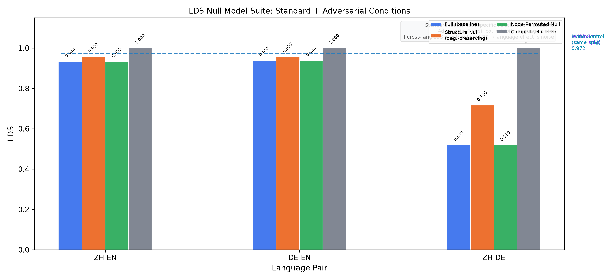

A cross-lingual analysis of mathematics, physics and chemistry textbook knowledge — across China, Germany, the United Kingdom and the United States — measured through structural graph metrics and curriculum alignment.
Three complementary lenses on how the same knowledge is organized differently
How do different languages organize the same knowledge?
LDS-K reveals heterogeneous cross-linguistic relationships: ZH-DE (0.519) textbooks converge substantially; ZH-EN (0.934) and DE-EN (0.938) are near the within-language noise floor. A Null Model falsifies the language-divergence interpretation — the core signal is ΔLDS (cognitive minus textbook).
How do different STEM subjects organize knowledge?
All three disciplines follow an early-peak-later-decline pattern. Knowledge density peaks at middle or elementary school, then drops sharply. Maximum prerequisite depth is bounded at 8.
How do different curricula organize the same subject?
Coverage scores range from 12.7% (NRW) to 95.4% (China). Granularity (safest reading) and governance (hypothesis, paper §8.6) both fit these differences.
What this project delivers to the field
1,140+ concepts and 1,100+ direct relations across mathematics, physics and chemistry in Chinese, English and German — extracted from 180 textbooks and validated against 92 gold-standard annotations (social F1 = 0.939; weighted overall 0.881).
CDS (concept density), HDS (hierarchy depth) and LDS (language drift) quantify how knowledge is connected, sequenced and structured across languages and disciplines.
The Coverage Score measures textbook–curriculum alignment across four education systems (Germany, UK, US, China), revealing how different educational philosophies produce systematically different alignment patterns.
12 findings spanning density universals (F1–F3, F6–F8), cross-language divergence (F4–F5), curriculum design philosophy (F9–F10), and human-validation revision (F11–F12) — all independently verifiable from the released data and pipeline.
From textbook text to structural insights in five steps
Five finding sections covering twelve numbered results (F1–F12): how knowledge is organized across disciplines, languages, education systems, and individuals
Mathematics peaks at middle school (CDS = 0.271). Physics peaks at elementary school (CDS = 0.222). Chemistry shares the same middle school peak (CDS = 0.042). After the peak, density drops sharply — a 3.7× decline from middle to high school in mathematics.
This contradicts the natural assumption that "more advanced knowledge is more densely connected." Instead, curricula are designed to maximize connection density during foundational stages (early integration) before branching into specialization (later differentiation).


Maximum prerequisite chain depth is HDS ≤ 8 for mathematics and HDS ≤ 6 for physics. Mean depth is even lower: 0.40 for math, 0.85 for physics. Over 83% of math concepts have no prerequisite chains at all (root concepts).
Physics has 2.1× more sequential depth than mathematics (60% roots in physics vs 83% in math), reflecting its more cumulative knowledge structure. But both disciplines respect the same shallow upper bound — suggesting a pedagogical or cognitive constraint on how knowledge can be sequenced.

Textbook knowledge structures converge across languages more than random expectation. ZH-DE (LDS-K = 0.519) shows substantial convergence — far below the within-language noise floor (0.97). ZH-EN (0.934) and DE-EN (0.938) are near this noise floor, meaning cross-language and within-language differences are comparable for these pairs.
The pattern is also topic-dependent: within each language pair, LDS varies by up to 0.2 across the 5 social topics analyzed, suggesting that some knowledge domains are more culturally inflected than others.

Honesty note (P2 recheck): math nodes are alignment labels, not independently extracted concepts — size-matching to Wikipedia scale reverses the pattern. The 0.519 convergence is partly a representation/size artifact (paper §3.8).
Coverage scores range from 12.7% (NRW) to 95.4% (China). China shows near-perfect alignment under a centralized national curriculum. The UK (37.3%) shows moderate alignment through its national curriculum. The US (17.2%) and NRW (12.7%) reflect broad or detailed standards that afford local adaptation. These differences are consistent with educational governance (hypothesis, paper §8.6) — but granularity (A) remains the safest interpretation; the data fit all three explanations below.
Fig 8 — Overall Coverage Score (paper §8.5: NRW 12.7% · UK 37.3% · US 17.2% · China 95.4%)
F9 Coverage scores vary dramatically across education systems (12.7%–95.4%). Granularity (safest reading) and governance (hypothesis, paper §8.6) both fit these differences.
F10 China's near-perfect alignment (95.4%) versus NRW's low alignment (12.7%) reflects the spectrum from centralized curriculum to local adaptation.
Extended study (6 DE · 6 ZH · 3 EN): concept-level LDS-C is 0.93–0.96 — indistinguishable from the within-language split-half floor (0.92–0.96) and label permutation (0.94). Concept-level ΔLDS ≈ 0 (−0.05…+0.05); relation-level Δ is not comparable across sparsity regimes. Pilot N=8 values (0.70–0.75) were not replicated and are reported for transparency only. The earlier human-vs-simulation comparison (p=0.05) is withdrawn (measurement-scale drift).
| Level | DE–ZH | DE–EN | ZH–EN | Rank Order |
|---|---|---|---|---|
| Human N=15 (Between) | 0.93–0.96 | 0.93–0.96 | 0.93–0.96 | ≈ floor |
| LLM Within-Subject | ≫ floor (+0.08–0.09) | ≫ floor | ≫ floor | signal |
| Textbook LDS-K | 0.519 | 0.938 | 0.934 | ✓ |
| Simulation Baseline | 0.646 | 0.655 | 0.640 | withdrawn* |
F11 N=15 falsifies ΔLDS > 0 between-subject: human LDS-C ≈ split-half floor — between-subject designs cannot separate language from participant variance.
F12 Concept-level ΔLDS ≈ 0; LLM within-subject margin (+0.08–0.09) shows the signal exists — earlier simulation comparison withdrawn.
Explore the mathematics subgraph in an interactive 3D knowledge graph — 556 nodes · 525 relations · 219 groups
Switch between zoom, rotate and fly modes. Filter by language or discipline. Compare how different education systems structure the same mathematical knowledge.
Transparent assessment of methodological boundaries and potential biases
The corpus is not a comprehensive sample of all textbooks in each language. Chinese textbooks are predominantly one series (Renjiao), which may not represent the full diversity of Chinese mathematics education. German textbooks are weighted toward senior-level university texts (Forster, Fischer) with fewer primary-level resources.
Only three STEM disciplines (mathematics, physics, chemistry) were analyzed. The framework has not been validated on humanities, social sciences, or professional fields. The universal claims (e.g., "knowledge density peaks early") are therefore limited to STEM education.
Curriculum documents vary enormously in granularity: the US math curriculum contains 2,124 concepts while the UK science curriculum has 397 (paper §8: NRW 299 · UK 397 · US 2,124 · CN 87). Higher granularity mechanically lowers coverage scores when matched against the same textbook graph. This is partially mitigated by normalizing per-curriculum, but cross-system comparisons remain approximate.
Concept extraction depends on a single production model. The 19-model benchmark (F1 range 0.55–0.67) confirms extraction consistency across architectures. While F1 = 0.939 on social concepts, the math domain achieves only 0.674 overall (German as low as 0.506). Extraction errors propagate through all downstream metrics. Relation extraction (prerequisite links) is less reliable than concept identification.
Only three languages (ZH, EN, DE) were analyzed. These represent only two language families (Sino-Tibetan, Germanic) and one educational tradition cluster (Western Europe + East Asia). The framework's applicability to Romance, Slavic, Arabic, or other language families remains untested.
92 gold labels, while sufficient for overall F1 estimation (especially for social concepts, n=72), are limited for fine-grained per-language, per-domain analysis. The mathematical domain has only 20 labels across 3 languages, and the German math F1 estimate (0.506) has high variance.
How four education systems align their curricula with textbook content
Coverage decreases toward upper-secondary specialization. Teachers exercise curricular freedom — they select from the curriculum rather than covering all of it. Reflects a specialization-driven philosophy.
The exam-driven system drives comprehensive textbook coverage — every curriculum point must be taught because it might be tested. Moderate overall alignment (37.3%, paper §8.5).
Low overall coverage with stable trajectory across stages. The US standards define broad learning goals rather than detailed syllabi, giving textbook authors interpretive freedom while maintaining curriculum alignment.
Near-perfect alignment with a centralized national curriculum. Chinese textbooks closely follow the national syllabus, resulting in the highest coverage across all four systems. The highly selective, curriculum-driven textbook market aligns textbooks tightly with government standards.
Claims: Dense curricula produce higher coverage. Evidence: Counter-indicated — the US has the densest curriculum (2,124 concepts) but one of the lowest coverages (17.2%).
Coverage patterns reflect educational governance: CN centralized (95.4%), UK national curriculum (37.3%), US broad standards (17.2%), NRW per-track specifications (12.7%).
Some concepts may be taught in other subjects (e.g., physics in chemistry). Plausible but unverified — cross-subject concept mapping could reveal systematic transfers.
Gold standard annotations and model benchmarks
Human-annotated gold standard covering social concepts and mathematical concepts across all three languages. Validated against production-model extraction.
| Domain | ZH F1 | DE F1 | EN F1 | Overall | n |
|---|---|---|---|---|---|
| Social Concepts | 0.974 | 0.949 | 0.882 | 0.939 | 72 |
| Mathematics | 0.857 | 0.506 | 0.711 | 0.674 | 20 |
| All (weighted) | 0.951 | 0.842 | 0.844 | 0.881 | 92 |
Note: The low German math F1 (0.506) is a domain mismatch — the math gold labels use Chinese/English mathematical terminology not present in the German textbook corpus. Social concept extraction is uniformly strong across all three languages.
All free-quota Bailian API models tested on 92 gold labels. The production extraction model was selected by overall F1.
Fused view — all 55 full-run ZH-DE margins (LDS-C minus split-half floor) under one P1 protocol (ZH/DE/EN × 10); every run p<0.01 (500 permutations). Western runs in red. The 31 collecting runs (incl. qwen-max n=29/30, per paper §8.15) withhold margins until n=30. Source: data/lds_c/llm_subject/multi_model_replication_20260910.json + paper §5.10.
| Model | Origin | ZH-DE margin | Signif. |
|---|---|---|---|
| command-a-03-2025 | West · Cohere · CA | +0.42 | p<0.01 |
| gpt-5.6-luna | West · origin undisclosed | +0.22 | p<0.01 |
| nemotron-3-super-120b-a12b | West · NVIDIA · US | +0.17 | p<0.01 |
| nemotron-3-ultra | West · NVIDIA · US | +0.16 | p<0.01 |
| gpt-oss-20b | West · OpenAI-weights · US | +0.13 | p<0.01 |
| laguna-s-2.1 · direct | West · Poolside · US | +0.10 | p<0.01 |
| laguna-s-2.1 · kilo | West · Poolside · US | +0.07 | p<0.01 |
| deepseek-v3.1 | CN | +0.29 | p<0.01 |
| qwen-turbo | CN | +0.25 | p<0.01 |
| qwen3-max | CN | +0.24 | p<0.01 |
| deepseek-v3 | CN | +0.24 | p<0.01 |
| qwen3.8-max | CN | +0.21 | p<0.01 |
| glm-5 | CN | +0.19 | p<0.01 |
| qwen3.5-397b-a17b | CN | +0.18 | p<0.01 |
| qwen3.7-max | CN | +0.18 | p<0.01 |
| glm-5.2-fast-preview | CN | +0.18 | p<0.01 |
| qwen3.5-plus | CN | +0.18 | p<0.01 |
| deepseek-v3.2 | CN | +0.17 | p<0.01 |
| deepseek-v4-flash · dashscope | CN | +0.16 | p<0.01 |
| MiniMax-M2.5 | CN | +0.16 | p<0.01 |
| qwen3.6-plus | CN | +0.16 | p<0.01 |
| glm-5.2 · direct | CN | +0.16 | p<0.01 |
| qwen3.7-plus | CN | +0.15 | p<0.01 |
| glm-4.6 | CN | +0.15 | p<0.01 |
| glm-5.1 | CN | +0.14 | p<0.01 |
| longcat-2.0 | CN | +0.14 | p<0.01 |
| kimi-k2.6 · direct | CN | +0.14 | p<0.01 |
| glm-4.7 | CN | +0.13 | p<0.01 |
| kimi-k2.6 · dashscope | CN | +0.13 | p<0.01 |
| MiniMax-M2.1 | CN | +0.13 | p<0.01 |
| kimi-k2.5 | CN | +0.12 | p<0.01 |
| kimi-k2.7-code | CN | +0.12 | p<0.01 |
| qwen3.5-27b | CN | +0.12 | p<0.01 |
| glm-5.2 · dashscope | CN | +0.12 | p<0.01 |
| qwen3.6-27b | CN | +0.11 | p<0.01 |
| deepseek-v4-pro · dashscope | CN | +0.11 | p<0.01 |
| qwen-flash | CN | +0.11 | p<0.01 |
| Kimi-K2-Instruct | CN | +0.10 | p<0.01 |
| deepseek-r1-distill-qwen-14b | CN | +0.10 | p<0.01 |
| qwen-plus | CN | +0.10 | p<0.01 |
| qwen3.5-35b-a3b | CN | +0.10 | p<0.01 |
| qwen3.5-flash | CN | +0.09 | p<0.01 |
| qwen3.5-122b-a10b | CN | +0.09 | p<0.01 |
| kimi-k2-thinking | CN | +0.09 | p<0.01 |
| qwen3.6-35b-a3b | CN | +0.08 | p<0.01 |
| deepseek-v4-flash · direct | CN | +0.08 | p<0.01 |
| qwen3-235b-a22b | CN | +0.08 | p<0.01 |
| mimo-v2.5 | CN | +0.08 | p<0.01 |
| deepseek-v4-pro · direct | CN | +0.07 | p<0.01 |
| qwen3.7-flash | CN | +0.07 | p<0.01 |
| deepseek-r1-distill-qwen-32b | CN | +0.07 | p<0.01 |
| qwen3.6-flash | CN | +0.05 | p<0.01 |
| deepseek-r1 | CN | +0.05 | p<0.01 |
| deepseek-r1-distill-qwen-7b | CN | +0.04 | p<0.01 |
| deepseek-r1-0528 | CN | +0.03 | p<0.01 |
| Model | Origin | Progress | Status |
|---|---|---|---|
| Collecting — incomplete runs (n<30, margin withheld): | |||
| qwen-max | repo | n=29/30 | collecting |
| gpt-oss-20b | repo | n=20/30 | collecting |
| grok-4.6 | repo | n=18/30 | collecting |
| llama-3.3-70b-instruct-fp8-fast | repo | n=15/30 | collecting |
| ling-3.0-tiny | repo | n=12/30 | collecting |
| nemotron-3-ultra-550b-a55b | repo | n=11/30 | collecting |
| mistral-medium-latest | repo | n=10/30 | collecting |
| nemotron-3-nano-30b-a3b | repo | n=6/30 | collecting |
| laguna-s-2.1 | repo | n=5/30 | collecting |
| north-mini-code | repo | n=3/30 | collecting |
| glm-4.5 | repo | n=3/30 | collecting |
| glm-4.5-air | repo | n=3/30 | collecting |
| qwen3-14b | repo | n=3/30 | collecting |
| qwen3-30b-a3b | repo | n=3/30 | collecting |
| qwen3-32b | repo | n=3/30 | collecting |
| qwen3-8b | repo | n=3/30 | collecting |
| qwq-plus | repo | n=3/30 | collecting |
| gemma-4-26b-a4b-it | repo | n=3/30 | collecting |
| gemma-4-31b-it | repo | n=3/30 | collecting |
| ling-3.0-tiny | repo | n=3/30 | collecting |
| nemotron-3-super-120b-a12b | repo | n=3/30 | collecting |
| nemotron-3-ultra-550b-a55b | repo | n=3/30 | collecting |
| laguna-xs-2.1 | repo | n=3/30 | collecting |
| gemini-3.8-flash | repo | n=2/30 | collecting |
| mistral-large | repo | n=2/30 | collecting |
| gemma-4-31b-it | repo | n=2/30 | collecting |
| mistral-small-3.1-24b-instruct | repo | n=1/30 | collecting |
| mistral-small-latest | repo | n=1/30 | collecting |
| nemotron-3-ultra-550b-a55b | repo | n=1/30 | collecting |
| gpt-oss-120b | repo | n=1/30 | collecting |
| muse-spark-1.3-contributor | repo | n=1/30 | collecting |
Scope note: F1-benchmark (19 models, gold-label model selection) ≠ replication (55 runs, language signal) ≠ collecting (31 incomplete incl. qwen-max n=29/30, margin withheld). Families per paper §5.10: Qwen 20 · DeepSeek 12 · GLM 7 · Kimi 6 · MiniMax 2 · mimo · laguna · longcat · nemotron · gpt-oss · command-a · luna.
Preprint manuscript available in the repository
LinguaGraph asks whether language shapes the structural organization of knowledge. Two pipelines — textbook graphs (556 concepts, 525 relations, 219 groups) and LLM-as-subject (55 runs, 50 models) — isolate the language signal ΔLDS: N=15 falsifies it between-subject; within-subject shows it clearly (paper §5).
Three Conclusions · Introduction · Related Work · Methodology · Results · Discussion · Conclusion · Physics Results · LPA Analysis
@misc{linguaGraph2026,
author = {Rong, Jiajun and Lan, Zhenxi},
title = {LinguaGraph: Cross-Lingual Knowledge Structure Analysis Framework},
year = {2026},
publisher = {GitHub},
journal = {BWKI 2026 — Bundeswettbewerb Künstliche Intelligenz},
url = {https://github.com/jjjjjjjjnnjnn/BWKI-2026-LinguaGraph}
}
All data, code and results are publicly available
Complete pipeline scripts, extraction code, benchmark runners and evaluation tools.
All knowledge graphs, curriculum alignments, gold annotations and benchmark results.
Full manuscript with 3 research questions, 4 metrics, 12 findings and error analysis.
8 publication-ready figures: CDS, HDS, LDS, null-model and coverage distributions.
19-model comparison across Bailian API. Full evaluation results with F1 scores per language and domain.
Questions, collaboration, or feedback? Open an issue on GitHub.